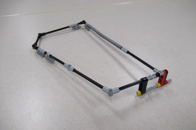

When designing our base robot, we establish criteria at the outset, such as desired footprint, height, balance, drive train, sensors to be used, user interface, etc. to arrive at a working prototype. We also strive to design and build a base robot which is robust and which features a frame around the chassis to provide structural rigidity as well as means to square up against walls and mission models. We design attachments keeping in mind that these attachments need to be easy to install and remove, robust, and both passive and multi-purpose whenever possible. From testing the prototype base robot and the attachments, we make revisions to our work in order to combine and speed up missions and increase repeatability to achieve maximum efficiency. By the end of the season, our attachments will often be in their fifth or sixth iteration.


Our robot is very robust and compact with a frame for strength. We use four light sensors for maximum flexibility, with shielding from ambient light. Our robot has small wheels, which are steering neutral, and has narrow and hard wheels for more accuracy and both straight movements and turns. However, we sacrifice some speed due to our small diameter wheels which decrease the error associated with the drive motor rotation sensors.


When first designing our robot we wanted to make sure that all the light/color sensors behaved similarly. Color sensors each return small differences in readings because of variations in manufacturing. For example, if you were to place two different color sensors on the same black line, each would return different values for light intensity. Sometimes the difference may be significant. To make sure that all our light sensors had about the same reading we completely shielded ten color sensors to eliminate the variable of ambient light and recorded the reading for each of the color sensors on black, white, and green. We then found the three color sensors which have the closest reading to each other and used those three color sensors on the robot.
We have found that the green EV3 move blocks (Move Tank and Move Steering) are unreliable. Although they have a built in PID feature, they still do not move the robot in a straight line. To test this, we set a designated starting spot for the robot and then we ran it until it hit the wall on the other side of the table. We repeated this dozens of times and found that each time it would end up in a different spot on the other side of the table. Each time it would be up to one inch away from the previous run. Then, we made our own error-corrected move block (which you can read about in the programming section of this website). We conducted the same experiment using our block and found that there was much less error and the robot would consistently end up in the same position on the table.
Our light sensors were dependent on the distance they were away from the mat. We found out that our light sensors were too low to the mat and were not picking up proper light readings. We used the EV3 experiment which can track the different movements on the motors and sensors. We tracked the readings to see if they would change properly from white to black; 100 to 0. They did not reach those values so we realized it was too far from the mat.
| Name of Attachment | Description | Picture |
|---|---|---|
| LEGO Pneumatics | This attachment is used for raising the strength bar. The attachment is triggered by a lever which releases the air pressure inside of the Lego air tank that we pump at the beginning of the match. We pump the Lego pistons so that the air pressure can go through the LEGO pipes into the Lego air tank. The LEGO air tank stores air inside it until it is triggered by the lever being pushed, releasing the potential energy into kinetic. This attachment is passive and releases off the robot when the bar lifts up to raise the strength bar. This attachment also has guide wheels to run against the wall to get to the mission model. | |
| Tele-Velocity | This attachment completes the Escape Velocity and Telescope missions. The robot pushes the attachment against the wall using guide wheels that are attached to the frame. The robot stops abruptly causing the attachment to jerk forward, dropping its heavy wheel on the launch pad on the Escape Velocity mission model then extends the arm using elastics. As the robot begins to drive forward, the arm pushes the pointer on the Telescope mission. | |
| Solar Carts | This attachment is connected to the back-medium motor. We have added a lock to connect the attachment to the robot incase the attachment comes off mid-way through the mission. There are guide wheels connected to the side frame of the attachment to drive along the west wall. Once the robot reaches the Space Travel ramp, it continues to drive as a wedge lifts the lever on the mission model, letting the first payload roll down the ramp. Next, an arm on the attachment pushes the solar panel forward, as the robot continues driving. Once the robot reaches the mission model and cannot further drive, an arm with the other two payloads is then lowered, and the payloads get loaded onto the ramp. The payloads are loosely attached to the attachment, so when the robot then drives back to base the payloads are released and roll down the ramp. | |
| Gerhard The Tube Module | This attachment is used to put Gerhard completely into the Habitation Hub's Airlock Chamber for maximum points. While Gerhard is getting put into the Habitation Hub's Airlock Chamber, the robot will drive forward and insert the Tube Module, and then drive back to base. | |
| Cone Module | This attachment grabs the Cone Module. Using gear mechanisms, the arms on the attachment can rotate turning upwards. The robot drives towards the mission model, and once close enough, the motor rotates, grabbing the Cone Module, and delivers it back to base. |  |
| 3D Printer | This attachment is connected to the front of the robot. It uses a passive attachment that drops a core sample inside the 3D Printing mission model causing the 3D brick to eject. The attachment is also a leave-behind. | |
| Satellites | This attachment is connected on top of the robot. Part of this attachment shoots our agent craft over the Crater Crossing mission model for 20 points. This attachment carries two satellites, and at the very end of our run, we drive the robot into the scoring zone with the satellites over it. | |
| Gerhard the Tube Module | This attachment pushes the other team’s solar panel forward. It is an arm that attaches to another attachment, and when the robot drives towards the panel, the arm pushes it forward. | |
| Water Core Sample | This attachment drops the water core sample onto the food production mission model. The attachment is connected to the front large motor. After the robot completes the Food Production mission, the medium motor rotates, dropping the core sample onto the mission model. |  |
| Core Collection | This attachment completes the Core Samples extraction mission. It connects to the robot’s medium motor and when rotated, it slaps onto core samples mission model. The robot then continues to drive forward while the attachment slides along the top of the mission model and traps the core samples within the borders of the attachment. |  |
| Crater Crossing | This attachment pushes down the gate on the Crater Crossing mission model. The attachment connects to the robot’s front large motor. The arm is extendable so that it can fit in base. The robot drives towards the mission model, and once there, the front large motor rotates, extending the arm far enough to slap down the gate. |